O problema
A equipe de licitações monta à mão, em várias planilhas Excel, o mapa de distribuição por órgão e por credor, redigitando os mesmos dados a cada etapa, o que causa retrabalho, erros de cálculo e atraso na distribuição da dotação orçamentária.
1) Cada unidade demandante preenche no Excel a distribuição de itens por órgão. 2) A equipe compõe por grupo, item, código, descrição, unidade, quantidade, valor unitário e total, e passa para uma planilha à parte de controle. 3) Aguarda os relatórios do pregoeiro e preenche empresa vencedora e valor homologado. 4) Separa os grupos homologados, fracassados e desertos. 5) Cria colunas de resultado geral e por órgão. 6) Monta tabela por empresa e por órgão participante. 7) Monta outra tabela com valor total, para conferência. 8) Monta a tabela de distribuição orçamentária por credor e órgão (processo, dotação, custeio 3 / investimento 4, CNPJ, valores, ano seguinte quando a dotação não comporta). Tudo é copiado e digitado entre planilhas.
Retrabalho e digitação duplicada em cada etapa; risco de divergência entre planilhas e entre valores estimados e homologados; demora na distribuição orçamentária.
AS-IS · o processo antes do MVP
O caminho real, com quem faz, o que entra, onde espera e o que é automatizável. Fonte: tabela AS-IS do projeto.

Fluxograma AS-IS · amarelo: etapa manual; tracejado: ponto de espera. Os números correspondem à tabela. Fonte Mermaid.
| Etapa | Quem faz | Entra | Ação | Sai | Sistema | Regra | Onde espera | Tempo | Automatizável |
|---|---|---|---|---|---|---|---|---|---|
| Receber distribuição de itens por órgão | Unidade demandante / Licitações | Planilha Excel da unidade | Aguardar e conferir o preenchimento | Planilha recebida | Excel / e-mail | Cada item com sua unidade de medida | Espera as unidades preencherem | A medir | Sim, com apoio humano |
| Compor mapa por grupo e item | Licitações | Planilha das unidades | Compor grupo, item, código, descrição, unidade, quantidade, valor unitário e total, e valor estimado por órgão | Planilha de controle | Excel | Valores vêm da pesquisa de preço | Digitação duplicada | A medir | Sim, com regra clara |
| Preencher valores homologados | Licitações | Relatórios do pregoeiro | Digitar empresa vencedora e valor homologado | Planilha com valores homologados | Excel / sistema de licitação | Valor homologado substitui o estimado | Espera o relatório do pregoeiro | A medir | Sim, com regra clara |
| Separar homologados, fracassados e desertos | Licitações | Planilha preenchida | Separar os grupos e registrar a observação conforme o caso | Planilha separada por situação | Excel | Situação do grupo define a observação | Retrabalho de cópia | A medir | Sim, com regra clara |
| Gerar resultado geral e por órgão | Licitações | Planilha separada | Criar colunas de resultado geral e por órgão | Planilha com resultados | Excel | Soma por órgão e total geral | Cálculo manual | A medir | Sim, com regra clara |
| Montar tabela por empresa e órgão | Licitações | Planilha com resultados | Montar tabela das empresas vencedoras por órgão participante | Tabela por empresa e órgão | Excel | Grupos ganhos por empresa | Redigitação | A medir | Sim, com regra clara |
| Montar tabela de conferência | Licitações | Tabela por empresa e órgão | Criar tabela com valor total para conferir a planilha anterior | Tabela de totais conferida | Excel | Totais devem bater com a planilha base | Divergências só são vistas no fim | A medir | Sim, com apoio humano |
| Montar distribuição orçamentária por credor e órgão | Licitações / Orçamento | Tabelas e dotação validada | Montar tabela com processo, dotação por órgão e grupo (3 custeio / 4 investimento), CNPJ e valores por credor; coluna do ano seguinte se faltar dotação | Tabela de distribuição orçamentária | Excel | Dotação não suporta o valor: nova coluna para o ano seguinte | Espera a validação da dotação | A medir | Sim, com apoio humano |
TO-BE · o processo com o MVP
O que muda em cada etapa, quem passa a fazer e o ganho esperado. Fonte: tabela TO-BE do projeto.

Fluxograma TO-BE · verde: máquina (automação local); azul: pessoa (fé pública). Fonte Mermaid.
Quando este processo existir, a equipe de licitações deixa de redigitar e conferir planilhas à mão e passa a gerar o mapa de distribuição e a tabela orçamentária automaticamente a partir dos relatórios do pregoeiro e do anexo do TR.
- Receber planilhas das unidades
Importar para a ferramenta
A pessoa assistida pela máquinaMenos digitação - Importar relatório do pregoeiro
Leitura automática de empresa e valor homologado
A máquina (automação)Fim da redigitação - Gerar mapa por grupo, órgão e empresa
Cálculos padronizados automáticos
A máquina (automação)Menos erros e tempo - Separar homologados, fracassados e desertos
Classificação automática com observação
A máquina (automação)Padronização - Conferir divergências
Alerta antes da distribuição orçamentária
A máquina (automação)Erros achados cedo - Validar dotação e distribuir
Tabela por credor e órgão gerada; ano seguinte quando faltar dotação
A pessoa assistida pela máquinaMenos retrabalho
| Etapa | O que muda | Quem faz | Benefício | Esforço |
|---|---|---|---|---|
| Receber planilhas das unidades | Importar para a ferramenta | A pessoa assistida pela máquina | Menos digitação | Baixo |
| Importar relatório do pregoeiro | Leitura automática de empresa e valor homologado | A máquina (automação) | Fim da redigitação | Médio |
| Gerar mapa por grupo, órgão e empresa | Cálculos padronizados automáticos | A máquina (automação) | Menos erros e tempo | Médio |
| Separar homologados, fracassados e desertos | Classificação automática com observação | A máquina (automação) | Padronização | Baixo |
| Conferir divergências | Alerta antes da distribuição orçamentária | A máquina (automação) | Erros achados cedo | Médio |
| Validar dotação e distribuir | Tabela por credor e órgão gerada; ano seguinte quando faltar dotação | A pessoa assistida pela máquina | Menos retrabalho | Alto |
O que o MVP entrega
Tela-assinatura: Esteira de 8 etapas e grade em formato planilha.
Menu do MVP: ProcessosConfiguração
Regras de negócio
| ID | Regra | Quando | Tipo | Exceção |
|---|---|---|---|---|
RN01 | Total do item = quantidade x valor unitário | Ao importar a planilha | Cálculo | Nenhuma |
RN02 | Grupo sem empresa é fracassado ou deserto, conforme o relatório | Ao ler o relatório do pregoeiro | Negócio | Nenhuma |
RN03 | Valor homologado substitui o valor estimado | Após o relatório | Negócio | Grupo fracassado ou deserto |
RN04 | Soma por órgão deve igualar o total do grupo | Na conferência | Validação | Nenhuma; diferença vira alerta |
RN05 | Se a dotação não suporta o valor no ano corrente, o excedente vai para o ano seguinte | Na distribuição orçamentária | Cálculo | Valor validado pela chefia |
RN06 | Dotação do tipo 3 (custeio) ou 4 (investimento) por grupo | Na distribuição | Negócio | Nenhuma |
RN07 | CNPJ deve ter 14 dígitos | Ao importar o relatório | Validação | Nenhuma |
RN08 | O valor homologado é usado por item; se o relatório trouxer só o total do grupo, aplica-se a todos os itens o mesmo desconto (homologado ÷ estimado do grupo) | Após o relatório do pregoeiro | Cálculo | Equipe pode informar o valor de cada item |
RN09 | Valor unitário com 2 casas; total do item = quantidade × valor unitário, arredondado a 2 casas; somas feitas em centavos | Em todos os cálculos | Cálculo | Nenhuma |
RN10 | A dotação de cada órgão e tipo é consumida na ordem dos grupos do processo; o que não couber vai para o ano seguinte | Na distribuição orçamentária | Negócio | Ordem definida pelo orçamento |
RN11 | Grupo misto (itens adjudicados a empresas diferentes) é tratado item a item | Ao ler o relatório do pregoeiro | Negócio | Nenhuma |
Papéis
| Papel | Quem é | O que vê | O que faz | O que não faz | Registro |
|---|---|---|---|---|---|
| Analista de licitações | Servidor que monta o mapa | Planilhas, relatórios e tabelas geradas | Importa arquivos, confere e exporta o mapa | Alterar valor homologado sem registro | Importação, edições e conferência |
| Unidade demandante | Órgão que pede os itens | Sua própria distribuição de itens | Envia a planilha de distribuição | Ver dados de outros órgãos | Envio e data |
| Pregoeiro | Responsável pelo preenchimento | Resultado de grupos | Fornece relatório com vencedores e valores | Alterar o mapa | Relatório fornecido |
| Analista de licitações / Orçamento | Valida a distribuição | Tabela orçamentária e divergências | Valida dotação e aprova | Alterar dados de origem | Validação e aprovação |
Métricas do piloto
Como testar
O MVP é um `index.html` offline, com dados fictícios. Abra index.html.
cd Apps/mapa-distribuicao-credor python construir.py python testes/testar.py python testes/cenarios.py python testes/jornada.py # Lightpanda (via WSL, CDP em 9222 e HTTP em 8000) python testes/jornada.py --cdp http://127.0.0.1:9222 --base http://127.0.0.1:8000
Documentos: PROJETO.md · sprint.md · README.md